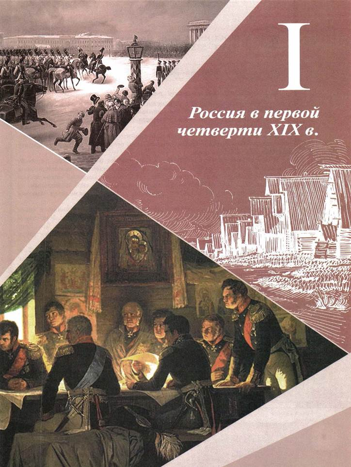
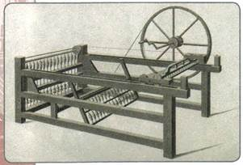
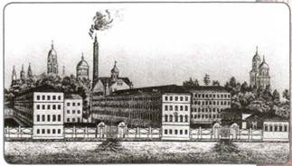
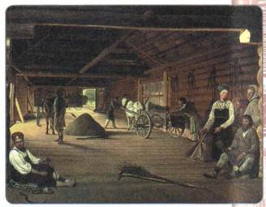
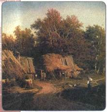
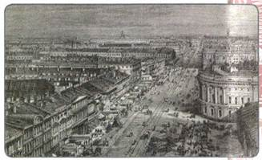
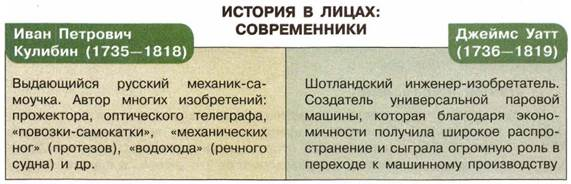

ВВЕДЕНИЕ
Дорогие ребята!
Период XIX—начала XX столетий занимает особое место в мировой и отечественной истории. Это был период невиданной прежде индустриальной, социальной, правовой, интеллектуальной перестройки, культурного обновления всего мира. Это была эпоха становления и утверждения во многих странах индустриального общества, оформления правового государства и гражданского общества, формирования наций и национальных государств, расцвета и начала заката крупнейших европейских империй.
В XIX в. происходило быстрое становление главных институтов современного общества: демократии, гражданского общества, основ социальной защищённости и социального равенства, массовой культуры.
Все общеевропейские и общемировые тенденции затронули в тот период и Россию. Вместе с тем специфика её развития состояла в том, что эти процессы проходили в условиях консервации политического режима самодержавия и ряда других сторон жизни страны. При этом Российская империя выступала одним из ведущих участников международной политики, а после победы над Наполеоном в войне 1812 г. Россия стала великой мировой державой, без которой не решался ни один вопрос мировой политики.
В период правления Александра I в 1801—1825 гг. были предприняты попытки реформирования политической системы, немало делалось для гуманизации законодательства, были реформированы механизмы управления многонациональной империей.
В годы правления Николая I в 1825—1855 гг. государство пыталось проводить экономическую модернизацию авторитарными методами, что вело к усилению централизации административной системы, росту бюрократизма, ужесточению государственного контроля над обществом. В итоге мобилизация государственных ресурсов позволила добиться крупных успехов на таких направлениях, как кодификация законов, развитие университетского и профессионального образования, реформирование государственной деревни, начало железнодорожного строительства. Вместе с тем система государственной опеки сдерживала общественную и частную инициативу, а сохранение сословной системы тормозило социально-экономическое и военно-техническое развитие страны, вело к её отставанию.
Великие реформы 1860—1870-х гг. стали важнейшим рубежом в истории России и затронули практически все сферы жизни. Они способствовали складыванию новых социальных отношений, развитию новых отраслей экономики, серьёзным переменам в области культуры. Усиление государственного вмешательства в экономику к концу столетия делало экономическое развитие страны ещё более интенсивным.
В то же время консервация сословных порядков в аграрной сфере, поддержка государством помещичьих хозяйств, сохранение общинных устоев, чрезмерное обременение крестьянских хозяйств обязательными платежами при малоземелье вели к отставанию развития сельского хозяйства от промышленности и финансовой сферы.
Великие реформы оказали серьёзное воздействие на социальную жизнь общества. Развитие земского и городского самоуправления, введение института
присяжных заседателей и состязательности судебного процесса, ослабление цензуры и, как следствие, рост объёма доступной информации, радикальное увеличение возможностей для общественных и частных инициатив в экономике, образовании, культуре, благотворительности — всё это способствовало оформлению ростков главных элементов гражданского общества.
Вместе с тем политическая система империи в целом оставалась незыблемой, и её авторитарный характер с неизбежностью вступал в противоречие с быстро менявшейся социальной, экономической и правовой ситуацией в стране. Это во многом стало причиной дисбаланса в развитии страны.
К концу XIX в. всё более очевидной становилась необходимость взаимодействия власти и общества при проведении реформ. Примером такого сотрудничества стали реформы П. А. Столыпина в 1906—1911 гг., а также установление основ конституционной монархии в 1906—1917 гг. Деятельность Государственной думы, реформированного Государственного совета и Совета министров России — уникальный для России исторический опыт сотрудничества народных представителей и правительственной администрации.
Период XIX—начала XX в. стал временем высочайших, признанных во всём мире достижений русской культуры и науки. Под культурой в данном случае следует понимать не только высокую культуру (науку, литературу и искусство), но и сферу повседневности, а также массовую культуру, появление которой стало в России (как и в других странах) одним из важнейших аспектов модернизационного процесса.
Национальная политика самодержавия менялась под воздействием социальных, экономических и культурных факторов. Если в первой половине XIX в. государство традиционно проводило политику учёта своеобразия отдельных регионов и этносов, политику сотрудничества с национальными элитами и их включения в общероссийскую элиту, то во второй половине XIX—начале XX в. возобладали тенденции к языковому и культурному единообразию в империи.
Сложные социальные, политические и национальные проблемы российской жизни решались в условиях обострявшейся внешнеполитической ситуации. Россия, будучи великой мировой державой, не могла остаться в стороне от международных конфликтов. На рубеже XIX—XX вв. наша страна была вынуждена искать стратегических союзников в рамках формировавшихся тогда блоков враждующих государств, делавших наступление мировой войны неизбежным.
Обо всех этих событиях вы узнаете на страницах данного учебника.
Мы желаем вам удачи в изучении отечественной истории XIX—начала XX в.
Авторы

В чём состояли главные перемены, вызванные промышленной революцией?
1. Начало промышленной революции
Со второй половины XVIII в. и вплоть до середины XIX в. в странах Западной Европы происходил процесс промышленной революции (или промышленного переворота) — переход от ручного труда к машинному, от мануфактуры к фабрике.
Началом промышленной революции принято считать изобретение и применение рабочих машин. Важнейшие из этих открытий были связаны с использованием энергии пара.
Ещё в 1705 г. англичанин Т. Ньюкомен изобрёл паровой насос, который, однако, не получил большого применения, но сама идея использования силы пара была взята на вооружение. Эту идею развил шотландский механик-изобретатель Дж. Уатт. В 1785 г. он начал использовать своё изобретение — универсальный паровой двигатель двойного действия (знаменитая паровая машина Уатта).
Первые машины, позволившие заменить труд человека, появились в хлопчатобумажном производстве в Англии. В 1733 г. англичанин Дж. Кей соорудил механический челнок для ручного ткацкого станка. В 1764 г. Дж. Харгривс создал механическую прялку («прялка Дженни»). Механизация труда ускоряла переход от мелкого производства к крупному фабричному.
В металлургии также начались изменения. В 1766 г. в Англии братья Т. и Д. Кранедж изобрели пудлинговую печь для выплавки железа, работавшую не на древесном, а на каменном угле. Это способствовало переходу к каменному углю как главному источнику энергии, стимулировало угледобычу.
В конце XVIII в. был изобретён гидравлический пресс. Поначалу он использовался для отжима масла, виноградного сока и т. п., а с середины XIX в. нашёл широкое применение в металлообработке. Русский механик Иван Петрович Кулибин в 1793 г. сконструировал гидравлический подъёмник (лифт).
Начало революции средств связи ознаменовало изобретение оптического телеграфа (семафора) для передачи условных сигналов на большие расстояния. В 1793—1794 гг. во Франции братья К. и И. Шапп построили первую линию оптического телеграфа между Парижем и Лиллем. В то же время в России Иван Кулибин создал оптический телеграф, который был снабжён фонарём с отражающим зеркалом (прожектором), что позволяло использовать телеграф не только днём, но также ночью и в туманную погоду (практическое применение данное изобретение нашло только спустя два десятилетия).

«Прялка Дженни»
Перемены затронули и транспорт. В 1783 г. во Франции братья Монгольфье произвели испытание воздушного шара (аэростата): он взлетел в воздух и пролетел 4 км. В 1801 г. англичанин Р. Тревитик на изготовленной им паровой повозке перевёз первых пассажиров.
2. Изменения в финансовой системе
Промышленная революция была бы невозможна без развитой финансовой системы, способной кредитовать растущее производство и торговлю. К концу XVIII в. в большинстве стран Европы появились фондовые биржи. Крупнейшей из них были Лондонская (открыта в 1773 г.) и Нью-Йоркская (открыта в 1792 г.). Первый частный банк Британии был основан в Бирмингеме в 1765 г.
В начале XVIII в. товарно-сырьевая биржа была создана Петром I и в России. Однако незначительный торговый оборот и неразвитость рынка привели к тому, что и в начале XIX в. биржа в Санкт-Петербурге оставалась единственной в России.
Банковская система европейских стран росла и крепла по мере развития промышленного производства. Создавались акционерные общества со своими коллективными капиталами. Для пополнения казны в ряде стран начал вводиться подоходный налог.
3. Перемены в сельском хозяйстве
Технические новшества серьёзно затронули и сельское хозяйство. Издавна одним из самых тяжёлых видов работ считался обмолот зерна (т. е. выделение семян из колосьев). В России ещё в 1655 г. мастеровыми А. Терентьевым и М. Криком было сконструировано первое молотильное устройство, однако широкого распространения оно не получило. В конце XVIII в. в Шотландии было создано схожее устройство для обмолота, но оснащённое быстро вращающимся барабаном.
Технический прогресс привёл к созданию культиватора на конной тяге, вырывающего сорняки. Затем появилась сеялка на конной тяге, не только делавшая углубления в земле, но и бросавшая в них семена. С её помощью одновременно можно было засеять не один, а сразу три ряда, что, несомненно, увеличивало производительность труда.
Из Англии распространялись и прогрессивные для того времени методы ведения сельского хозяйства.
Введение многопольного севооборота, отмена чистого пара, использование привезённых из колоний новых видов тяглового, племенного, молочного скота и его селекция быстро превратили Англию в лидера европейского сельского хозяйства.

Суконная фабрика купца Новикова в Москве. Первая половина XIX в.
Большую популярность получили и сельскохозяйственные культуры, завезённые из Нового Света и стран Азии. Не сразу стал популярен картофель, активно, а порой и силой внедрявшийся в Европе. При Петре I он впервые был завезён и в Россию, но массовое распространение получил лишь в XIX в.
Процесс внедрения в сельское хозяйство новой техники и новых производственных приёмов называют аграрной революцией. Всё это привело к увеличению производства зерна, мяса, молока, шерсти. Таким образом, быстро растущее население Европы оказалось обеспечено продовольствием в большем объёме, чем прежде.
4. Изменения в жизни общества
В конце XVIII—начале XIX в. человечество пережило демографическую революцию. Она была связана с начавшимися промышленной и аграрной революциями, накоплением первоначального капитала, изменением структуры питания людей, совершенствованием медицины. Численность населения неуклонно росла. Большое значение имело изобретение английским врачом Э. Дженнером вакцины от опасного вирусного заболевания — оспы. Смертность населения от болезней постепенно стала сокращаться, а рождаемость по-прежнему сохранялась высокой.
Численность населения Европы со 118 млн человек в 1700 г. выросла до 140 млн человек в 1750 г. и до 187 млн человек в 1800 г. В России население выросло в течение XVIII в. более чем в два раза, хотя во многом этот рост был связан с включением в её состав новых земель.
С развитием экономики, освоением Нового Света и колониальных владений, войнами была связана миграция (массовые перемещения) населения, начавшаяся на рубеже XVIII—XIX вв. и усилившаяся в XIX в. Масштабным перемещениям населения в Европе способствовало развитие транспорта, как железнодорожного, так и водного. Люди ехали в поисках места работы и приложения своих сил на новом месте.
Изменения происходили и в социальной структуре общества. Промышленная революция запустила процессы, способствовавшие смене социального статуса многих людей. Началось формирование новых слоёв общества — буржуазии и рабочих. Вчерашний крестьянин, покинув деревню, становился рабочим. Успешный работник, талантливый изобретатель мог стать предпринимателем.
Буржуазия становится самой динамичной и успешной частью общества. Её представители всё активнее влияли на жизнь своих стран. Они создавали свои политические организации, участвовали в парламентских и местных выборах. С ними были вынуждены всё больше считаться представители аристократии и монарших домов. Сословие дворян размывается, теряет свой прежний вес, утрачивает ведущую роль.
В России сходные социальные процессы проявятся позже, главным образом после Крестьянской реформы 1861 г.
5. Российская империя на рубеже XVIII—XIX вв.
К началу XIX в. Российская империя была крупнейшей по территории державой мира. Она простиралась от Балтики до Тихого океана, от Арктики до Чёрного моря и Кавказа. Увеличилась численность её населения. К началу XIX в. она составила 43,7 млн человек. При этом к востоку от Урала проживало лишь 3 млн человек.
6. Население Российской империи
По своему национальному составу население было неоднородным. Основу многонациональной страны составляли русские, жившие не только в европейской части империи, но и практически во всех её уголках. На юге и западе они соседствовали с украинцами и белорусами (которых тогда тоже считали русскими), в Прибалтике — с литовцами, латышами и эстонцами, а также с немцами. На Севере проживали народы финно-угорской группы (мордва, мари, коми, удмурты, карелы и др.). В Поволжье и Сибири было немало народов тюркской языковой группы (татары, башкиры, чуваши, якуты и др.). Тунгусо-маньчжурские народы в составе империи представляли эвены, эвенки, нанайцы, удэгейцы и др. Чрезвычайно разнообразен был национальный состав населения Северного Кавказа.
Религиозный состав населения также отличался разнообразием. Государственной религией являлось православие. Его исповедовало большинство населения страны (около 87%): русские, украинцы, белорусы и представители ряда других народов. В западных районах значительные позиции имело католичество и протестантизм. Многие тюркоязычные народы придерживались ислама; калмыки и буряты — буддизма. Некоторые народы (мордва, мари, удмурты и др.) считались православными, но сохраняли языческие верования. После присоединения в конце XVIII в. части земель Речи Посполитой увеличилась численность приверженцев иудаизма и католицизма.
Что касается сословной структуры российского общества, то здесь абсолютное большинство составляло крестьянство (94 % населения). Существовали три категории крестьян: государственные, удельные (в XVIII в. они назывались дворцовыми) и частновладельческие (или помещичьи); последняя категория была самой многочисленной. Все крестьяне платили подати — отрабатывали барщину или выплачивали оброк. Однако государственные крестьяне находились в более выгодном положении: они имели право заключать сделки, вести розничную и оптовую торговлю, могли владеть собственностью, открывать фабрики и заводы.
Другим податным сословием были мещане. В их число входили непривилегированные горожане: ремесленники, работные люди, мелкие торговцы. Общая численность мещан не превышала 2 % от жителей всей страны.

Гумно. Художник А. Г. Венецианов
Привилегированными сословиями были дворянство и духовенство. Дворянство в зависимости от размеров владений делилось на крупное, среднее и мелкое. Численность крупнопоместных дворян не превышала 1 тыс. человек. Это были высшие чиновники и генералы, каждый из которых владел не менее чем 1,5 тыс. душ крепостных крестьян. В среднем же один помещик владел 100—150 крепостными крестьянами, что давало ему 400—500 рублей годового оброка.
Духовенство всех уровней насчитывало к концу XVIII в. 215 тыс. человек.
Ещё одним сословием было купечество, делившееся на три гильдии. Наиболее богатые торговцы, относившиеся к первой гильдии, обладали преимущественным правом на ведение внутренней и внешней торговли, а также на организацию заводов и фабрик. Купцам второй гильдии государство давало некоторые привилегии для совершения внутриторговых операций. Представители третьей гильдии занимались в основном мелкой торговлей.
К началу XIX в. оформилось казачество — особое военно-крестьянское сословие. Областью его расселения были специальные административно-территориальные единицы — казачьи войска. К началу XIX в. их было семь: Астраханское, Донское, Оренбургское, Сибирское, Терское, Уральское и Черноморское.
7. Развитие экономики России на рубеже XVIII—XIX вв.
Экономика страны по-прежнему основывалась на крепостнической системе хозяйства. Однако в период с конца XVIII в. внутри этой системы постепенно начали зарождаться новые экономические отношения. Набирали силу явления, не свойственные крепостничеству: развивалась мануфактурная промышленность, использовавшая труд крестьян-отходников; число таких предприятий постепенно росло, медленно, с большим трудом, стал формироваться рынок наёмной рабочей силы. Но источники формирования рынка рабочей силы были ограничены.
Сохранение крепостного права тормозило развитие нового, более прогрессивного экономического строя. Если в европейских странах технические изобретения активно внедрялись в производство, приводя к его бурному росту, то в России изобретения порой не находили практического применения ни в промышленности, ни в сельском хозяйстве. Ведь подневольные крестьяне не были заинтересованы в освоении технических новшеств, а многие помещики не нуждались в повышении эффективности своих хозяйств (имея регулярный доход в виде разного рода крестьянских податей). Увеличивать свои доходы они предпочитали путём усиления давления на крестьян (т. е. простого увеличения оброка или барщины), а это вело к упадку крестьянских хозяйств.
В нечернозёмных губерниях оброк с крестьян в течение XVIII в. вырос в 5 раз. Барщина в чернозёмных губерниях составляла 4, а порой и 6 дней в неделю. В несколько раз увеличились налоги с населения, 25 % всех поступлений в казну шло от продажи спиртного, а до 10 % — от продажи соли (на эти товары существовала государственная монополия).

В деревне. Художник В. А. Васильев
Налоговый гнёт вёл к упадку и разорению многих крестьянских хозяйств, остававшихся главной экономической ячейкой общества. Однако основной причиной торможения развития страны был подневольный, лишённый материальных стимулов труд крепостных.
Так сохранение крепостных порядков обрекало помещичьи хозяйства на застой, лишало государство прибыли, возможностей эффективного роста, в то время как в Европе наблюдалось бурное развитие экономики благодаря промышленному перевороту.
Чтобы не отставать от держав-конкурентов, России необходимо было строить железные дороги, развивать промышленные предприятия, оснащать армию эффективным вооружением, техникой... Жизнь требовала от властей радикального реформирования экономической системы. Все эти факторы стали особенно очевидными после поражения России в Крымской войне в 1856 г. и подтолкнули власти к проведению Крестьянской реформы в 1861 г.
8. Политический строй России на рубеже XVIII—XIX вв.

Санкт-Петербург. Невский проспект. XIX в. Гравюра Э. Реклю
В начале XIX в. Россия оставалась самодержавной монархией. Вся высшая законодательная и распорядительная власть в стране принадлежала императору. Он же являлся и фактическим главой церкви, так как управлением её делами ведал назначаемый царём обер-прокурор высшей церковной коллегии — Синода.
Система высших органов государственной власти в основном оставалась неизменной со времён Петра I. Однако к концу XVIII в. стало ясно, что она нуждается в преобразованиях, так как многие из государственных органов не имели ни ясно определённых полномочий, ни чёткой структуры.
На местах власть от имени императора осуществляли губернаторы и наместники. Вместе с тем, согласно Жалованной грамоте городам, зажиточные граждане, разделённые на шесть разрядов (категорий), могли участвовать в вопросах управления через городские общие думы. Эти органы ведали в основном хозяйственными вопросами. Руководящие позиции в городском управлении по-прежнему сохраняли дворяне.

ПОДВЕДЁМ ИТОГИ
Начавшаяся в Европе во второй половине XVIII в. промышленная революция несла с собой всестороннее обновление традиционного общества. России необходимо было развиваться в том же направлении, сохраняя при этом свои исторические традиции и особенности.
Вопросы и задания для работы с текстом параграфа
1. Объясните суть и главные признаки промышленной революции. Почему она началась именно в европейских странах? 2. Как повлиял промышленный переворот на жизнь общества? 3. Можно ли считать Россию начала XIX в. мононациональной страной? Приведите цитаты из текста параграфа в поддержку своего вывода.
4. На чём основывалось экономическое развитие России на рубеже XVIII—XIX вв.?
5. Опишите систему управления страной в начале XIX в.
Работаем с картой
1. Определите по карте, какие из упомянутых в тексте параграфа государств имели с Российской империей общую сухопутную границу в начале XIX в.
2. Выясните по карте Российской империи XIX в., в каких регионах проживали казаки. Какой признак объединяет все эти территории?
Думаем, сравниваем, размышляем
1. Объясните, как связаны сословная организация российского общества начала XIX в. с особенностями экономического уклада страны. 2. Можно ли считать, что направления развития стран Западной Европы и России в начале XIX в. совпадали? Аргументируйте свой ответ. 3. Используя текст параграфа и дополнительные источники информации, составьте в тетради круговую диаграмму, представляющую процентное соотношение различных сословий населения России. 4. Найдите в Интернете информацию об одном из технических достижений конца XVIII—начала XIX в., упомянутых в параграфе. Подготовьте доклад, сопроводив его изображениями устройства.